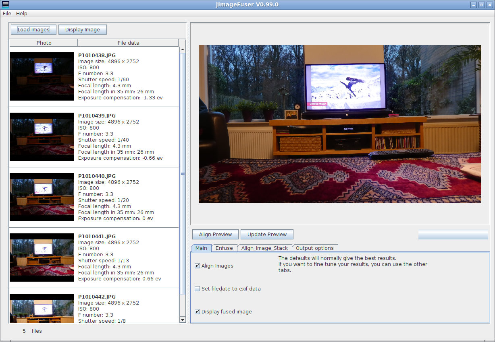

jImageFuser is a java/Swing Windows/Linux/MacOS graphical frontend for Enfuse and Align_image_stack.
The combination of Enfuse and Align_image_stack give you the option to:
- Blend your bracketed images with different exposure into a single well balanced, exposed, tone-mapped image using Enfuse. This will increase the dynamic range in your final (en)fused image.
- Align_image_stack can be used to better align your images "on top of each other". This is absolutely necessary when using hand-held shots and recommended when using a tripod (even a good tripod).
- Reduce noise by using identical repetitive images of the same scene from your camera in burst mode. Repetitive images reduce (photon shot) noise, increases dynamic range (especially in shadows) nad make images look "cleaner".
- Depth of Field aka Focus stacking: Blend images of the same scene with the focus at different distances with enfuse and align_image_stack to get a greater depth of field (sharp from front to back).
Enfuse is a command-line tool written by Andrew Mihal, Christoph Spiel and others.
Align_image_stack is one the tools belonging to the Hugin panoramatools and written by Pablo d'Angelo and many others from the Hugin team.
Some Screenshots
Linux

| Windows 10 (click to enlarge) | MacOS (click to enlarge) |
 |
 |
|